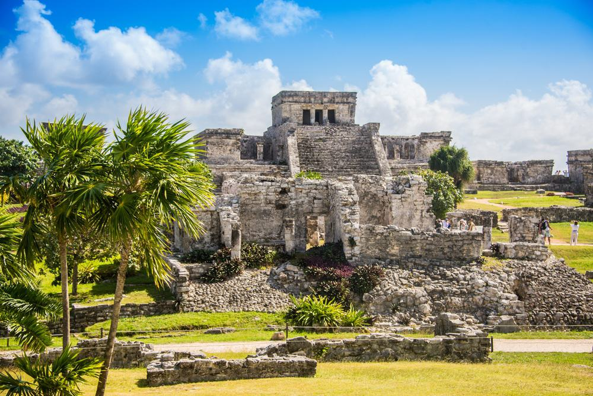
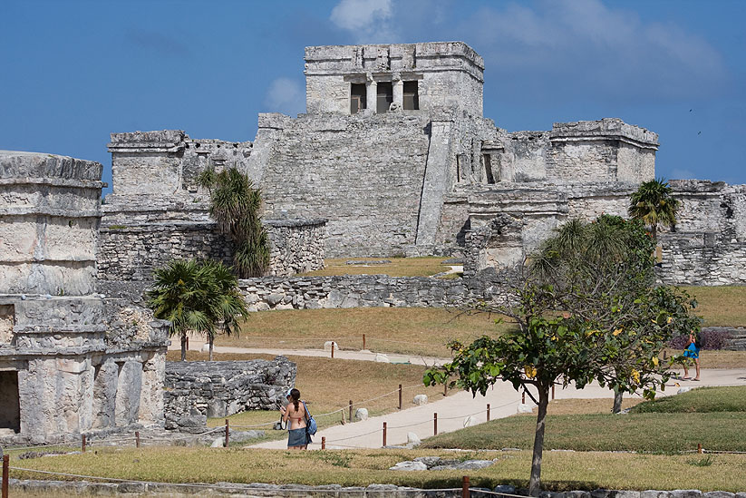

Tulum
Tulum es una antigua ciudad amurallada de la civilización maya, ubicada en la costa este de la penínsu

la de Yucatán, frente al mar Caribe. Su época de mayor esplendor se dio entre los siglos XIII y XV, y se destaca por ser un importante puerto comercial que facilitaba el intercambio de bienes como obsidiana, sal y productos agrícolas, así como por su papel religioso y estratégico en la defensa de la región.
Tulum es famosa por su ubicación única: sus murallas protegían la ciudad por tierra, mientras que el acantilado que da al mar ofrecía una defensa natural. Entre sus construcciones más destacadas se encuentra el Templo de los Frescos, decorado con pinturas que representan deidades y símbolos mayas, y el Castillo, una pirámide que servía tanto como templo religioso como punto de observación del mar y los alrededores, lo que permitía alertar sobre posibles invasiones. Otros edificios importantes incluyen el Templo del Dios Descendente, reconocido por su escultura característica de una deidad descendiendo del cielo, y varias plataformas donde se realizaban ceremonias rituales.
La ciudad de Tulum refleja la combinación de comercio, religión y defensa en la vida maya tardía. Su ubicación frente al mar Caribe y sus murallas la hacen única entre las ciudades mayas, y su arquitectura evidencia la habilidad de los mayas para adaptar sus construcciones al entorno natural. Además, hoy es uno de los sitios arqueológicos más visitados de México, famoso no solo por su historia sino también por su impresionante paisaje frente al mar, que conecta la grandeza del pasado maya con la belleza natural de la región.
